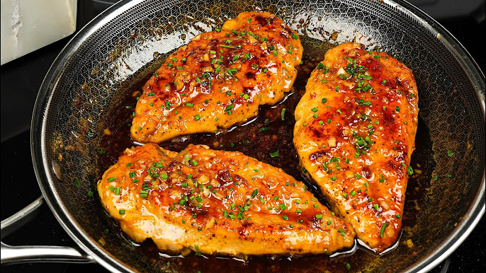

Chicken Breast

Description
The perfect balance of sweet,spicy,and savory. No longer the need to struggle through plain old chicken breast.
With perfect tenderness and juicy meat just oozing in the crevices of your mouth, you will definitely not be disappointed
in this recipe.
Ingredients
- Chicken breast
- Garlic Powder
- Black Pepper
- Paprika
- Salt
- Cornflour
- Light Soy Sauce
- Gochujang Paste
- Pickled Cucumbers
- Rice Vinegar
- Sesame Seeds
Steps
- Slice chicken into cubes
- Add Garlic Powder,Black Pepper,Paprika,Salt,and Cornflour
- Mix well
- Cook 8 minutes on medium heat
- Set chicken aside and add soy sauce,honey, and Gochujang paste into pan
- Stir until thickens
- Add chicken back in pan and mix well
- Cut Cucumbers and add light soy sauce,rice vinegar,garlic powder,seasme seeds,and mix
- Serve with rice or whatever else you have!